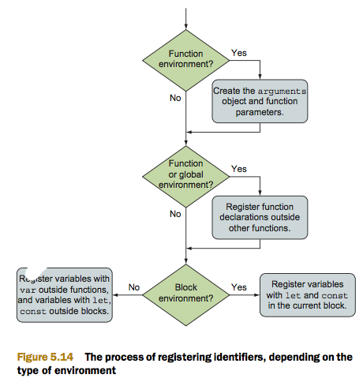

Ejemplo extraido del Libro Secrets_of_the_JavaScript_Ninja_Second.pdf - CHAPTER 5.5.3 - Registering identifiers
within lexical environments
One of the driving principles behind the design of JavaScript as a programming lan- guage was its ease of use.
That’s one of the main reasons for not specifying function return types, function parameter types, variable types,
and so on. And you already know that JavaScript code is executed line by line, in a straightforward fashion.
In this case, we assign the value Kiyokawa to the identifier firstRonin, and then we call the check function with
the identifier firstRonin as a parameter. But hold on a second—if the code is executed line by line, should we be
able to call the check function? Our program execution hasn’t reached its declaration, so the JavaScript engine
shouldn’t even know about it.
The first phase is activated whenever a new lexical environment is created. In this phase, the code isn’t executed,
but the JavaScript engine visits and registers all declared variables and functions within the current lexical
environment. The second phase, JavaScript execution, starts after this has been accomplished; the exact behavior
depends on the type of variable (let, var, const, function declaration) and the type of environment (global,
function, or block).
The process is as follows:
- If we’re creating a function environment, the implicit arguments identifier is created, along with all
formal function parameters and their argument values. If we’re dealing with a nonfunction environment, this
step is skipped.
-
If we’re creating a global or a function environment, the current code is scanned (without going into the
body of other functions) for function declarations (but not function expressions or arrow functions!). For
each discovered function declaration, a new function is created and bound to an identifier in the
environment with the function’s name. If that identifier name already exists, its value is over- written. If
we’re dealing with block environments, this step is skipped.
-
The current code is scanned for variable declarations. In function and global environments, all variables
declared with the keyword var and defined outside other functions (but they can be placed within blocks!)
are found, and all variables declared with the keywords let and const defined outside other functions and
blocks are found. In block environments, the code is scanned only for variables declared with the keywords
let and const, directly in the current block. For each discovered variable, if the identifier doesn’t exist
in the environment, the identifier is registered and its value initialized to undefined. But if the
identifier exists, it’s left with its value.
